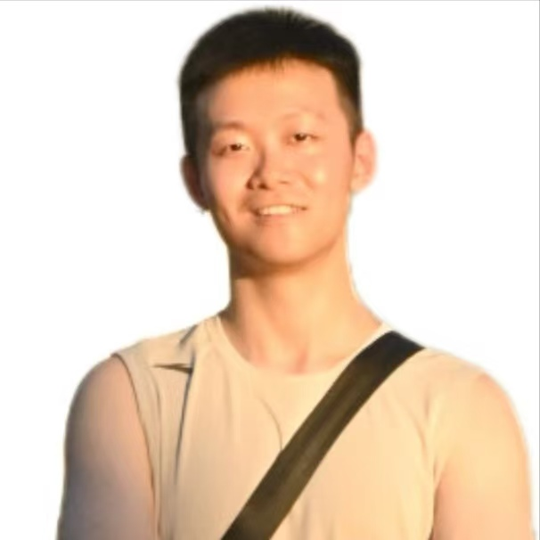
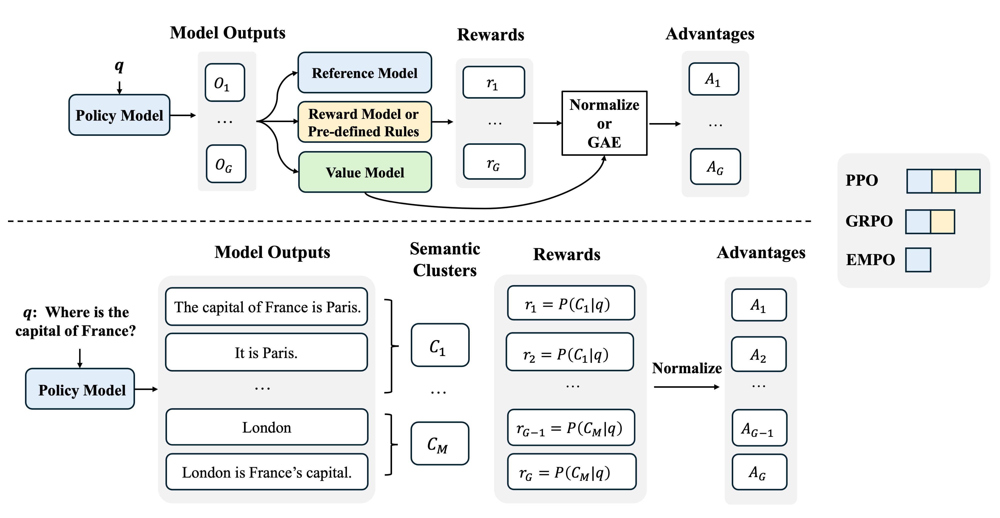
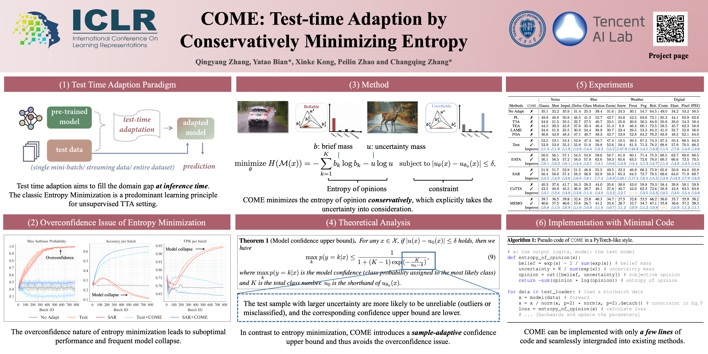
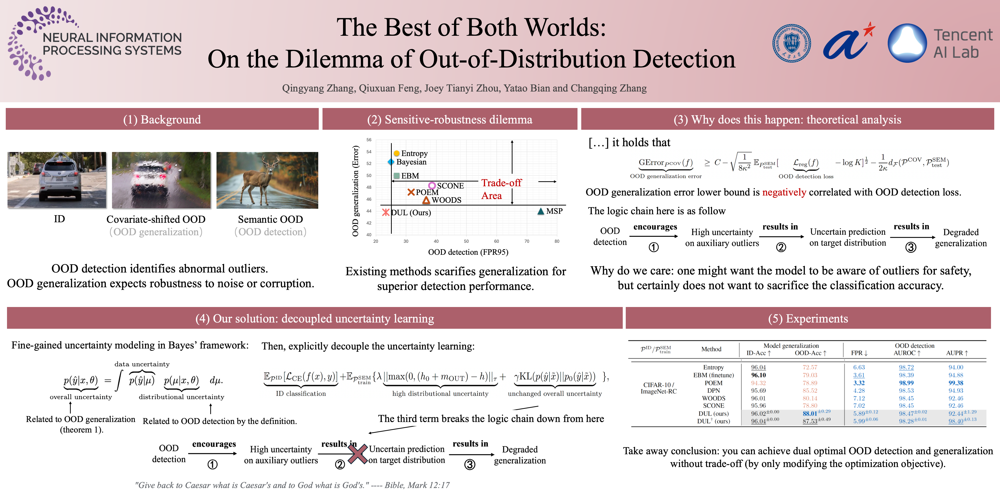
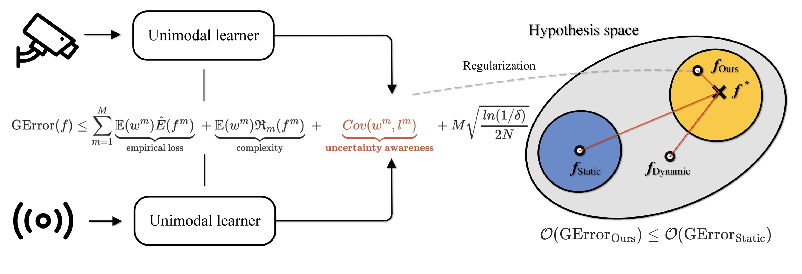
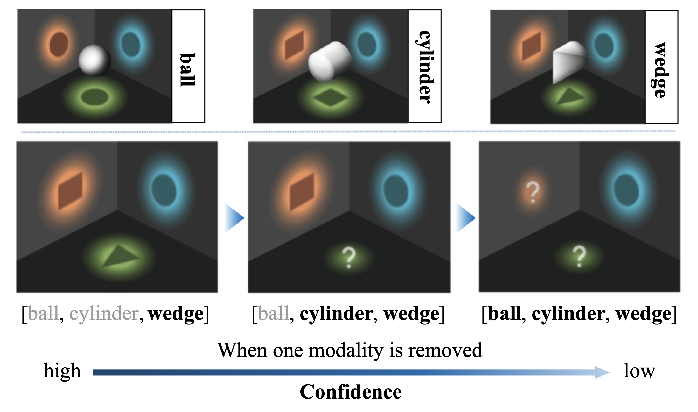
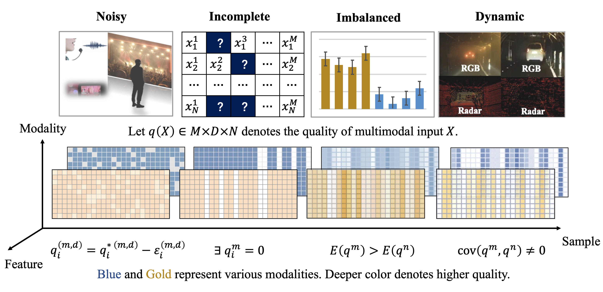

|
Qingyang Zhang 张庆阳
I am a 2nd-year PhD student at Tianjin University, supervised by Prof. Changqing Zhang. Currently, I am at an internship at Shanghai AI lab, co-supervised by Dr. Ganqu Cui.
I received my Bachelor's degree in School of Computer Science from Tianjin University. After that, I pursued my Master's in the School of Computer Science at Tianjin University and transitioned into a PhD candidate through the direct doctoral program (2+4) in 2024. I also had a wonderful time at Tencent AI Lab from 2024.04-2025.06, mentored by Dr. Yatao Bian and Dr. Peilin Zhao.
My research interests include Large Reasoning Models, Out-of-Distribution Detection/Generalization and Multimodal Learning.
Email /
Google Scholar /
Github /
中文简历 /
|

|
|
News
[2025-09] One paper about Unsupervised LLM Reasoning Incentivization has been accepted by NeurIPS as a Spotlight.
[2025-06] Gave a talk about "Reinforcement Learning with Internal Reward" @ Huawei 2012 Lab. Thanks Dr. Xueyan Niu's invitation!
[2025-06] Starting an internship at Shanghai AI lab, mentored by Dr. Ganqu Cui.
[2025-01] One paper about test-time adaption has been accepted by ICLR.
[2024-05] One paper about Out-of-distribution Detection has been accepted by NeurIPS.
[2024-05] We release a survey about fusion of low-quality multi-modal data. [arXiv]
[2024-04] Starting an internship at Tencent AI Lab, mentored by Dr. Yatao Bian.
[2023-04] Two paper accepted by ICML including one Oral paper, thanks to all co-authors.
|
Publications
|

|
Right Question is Already Half the Answer: Fully Unsupervised LLM Reasoning Incentivization
Qingyang Zhang, Haitao Wu, Changqing Zhang, Peilin Zhao, Yatao Bian
NeurIPS Spotlight, 2025
arXiv / code
Incentivizate LLM's reasoning capability without any external supervision (human-verified reasoning trace, golden answer or pretrained reward model).
|
|

|
COME: Test-time Adaption by Conservatively Minimizing Entropy
Qingyang Zhang, Yatao Bian, Xinke Kong, Peilin Zhao and Changqing Zhang
ICLR, 2025
arXiv / code
A simple learning principle for test time adaption.
|
|

|
The Best of both Worlds: On the Dilemma of Out-of-Distribution Detection
Qingyang Zhang, Qiuxuan Feng, Joey Tianyi Zhou, Yatao Bian, Qinghua Hu and Changqing Zhang
NeurIPS, 2024
arXiv / code
Solve conflicts between OOD detection and generalization for dual-optimal performance.
|
|

|
Provable Dynamic Fusion for Low-quality Multimodal Learning
Qingyang Zhang, Haitao Wu, Changqing Zhang, Qinghua Hu, Huazhu Fu, Joey Tianyi Zhou, Xi Peng
ICML, 2023
arXiv / code
Theory-inspired dynimical fuse strategy for quality-varying modalities in real world.
|
|

|
Calibrating Multimodal Learning
Huan Ma, Qingyang Zhang (co-first author), Changqing Zhang, Bingzhe Wu, Huazhu Fu, Joey Tianyi Zhou, Qinghua Hu
ICML Oral, 2023
arXiv / code
Mitigate the greedy nature of multimodal learning by regularizing the model confidence.
|
Survey
|

|
Multimodal Fusion on Low-quality Data: A Comprehensive Survey
Qingyang Zhang, Yake Wei, Zongbo Han, Huazhu Fu, Xi Peng, Cheng Deng, Qinghua Hu, Cai Xu, Jie Wen, Di Hu, Changqing Zhang
arXiv / awesome list
A systematical survey about fusion of low-quality multi-modal data.
|
|
Services
Conference Reviewer: ICLR 2022-2024, NeurIPS 2023-2024, ICML 2024
|
|
Awards
National Scholarship (twice, 1%) 2022, 2023
|
|
Last updated at Apr. 2025
|
|
{kind=link}